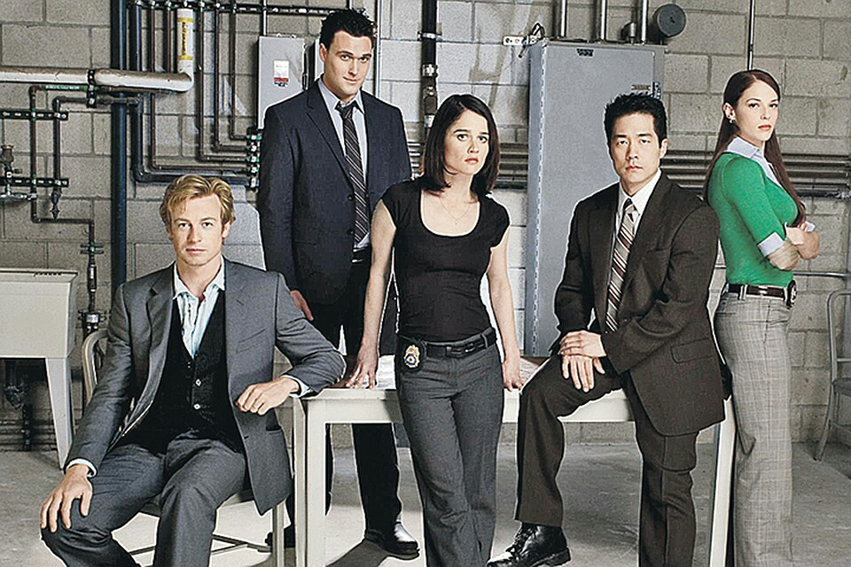

Люблю проводити карантин з користю
Отримувати знання і закріплювати їх на практиці
Шерлок
Сюжет серіалу розгортається навколо Шерлока Холмса, якого вважають генієм дедуктивного методу, і доктора Вотсона. Але все не так, як ми звикли уявляти, читаючи книжки про Шерлока Холмса. Тепер цей геній не просто розгадує загадки, але робить це у XXI столітті і навіть у 2010 році. Тепер записки змінюються на мобільні телефони, мемуари доктора Вотсона на онлайн-блог в інтернеті, а улюблена люлька Холмса на нікотинові пластирі. Але є дещо, що не змінилося. Шерлок розкриває злочини, вирішує головоломки і найголовніше — Холмс намагається розкрити і спіймати злого професора Моріарті, який також показаний у дуже непередбачуваному образі..
Форс-мажори
Майк Рос з дитинства мріяв стати юристом, але через шахрайства (спроби продажу результатів тесту з математики) був відрахований з коледжу. Він володіє феноменальною пам'яттю і блискучим розумом, але за волею долі йому доводиться перебиватися випадковими заробітками.
Менталіст
Головний герой Патрік Джейн (його роль виконує Саймон Бейкер), дотепний і приголомшливий психолог-практик і маніпулятор, який у минулому завдяки своїм умінням видавав себе за медіума, екстрасенса і ясновидця, а ще раніше заробляв як фокусник та ілюзіоніст. Тепер він допомагає Каліфорнійському бюро розслідувань у розкритті різних злочинів. Він категорично заперечує, що магія існує, і доводить, що все це спритність рук і спостережливість. Додаткова лінія — пошук маніяка «Червоного» Джона, який колись убив дружину та доньку Патріка Джейна за те, що той надто хизувався своїми здібностями ясновидця та насміхався з маніяка в телевізійному ефірі.
Менталіст
Теорія великого вибуху
Двоє талановитих фізиків, Леонард і Шелдон, вважають себе великими мислителями (сумарний IQ — 360). Але їхня геніальність анітрохи не допомагає їм спілкуватися з людьми, особливо з жінками. Все починає змінюватися, коли навпроти них поселяється білявка Пенні. Леонард починає цікавитися нею, проте Шелдон розуміє, що мріям його друга не судилося збутися (Ви з нею належите до різних біологічних видів). В свою ж чергу Пенні думає про них, як про милих вчених.